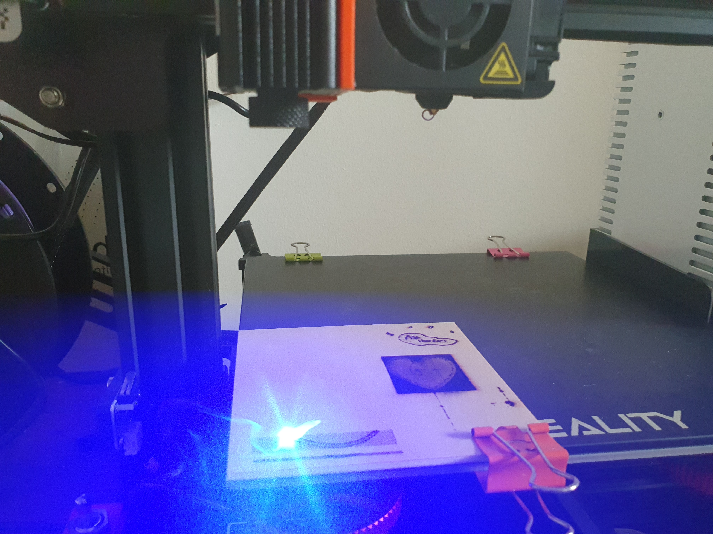

Getting started
I purchased the Blue Violet Laser Engraving Module from the Creality website for around £36. For that kind of money I expected very little so if it can burn a peice of wood I will call that a success. Despite my very low standards however, Creality do claim that I should be able to engrave MDF, Wood, fabric, Leather, and coated aluminum.
The laser came with 3 small test peices of wood, and some strong magnets for attaching the laser to the side of the metal fan cover on the extruder. Despite the magnets working better than I expected I decided that they still arnt really a suitable way of mounting something capable of blinding me.
Mounting the Laser
When you have a 3D printer the answer to all of lifes problems is of course to print something. Using tinkercad I got to work designing a way to securely mount the laser to the fan case. I needed a way to be able to easily attach the laser when I wanted to use it but easily remove it out the way when printing. Inspired by designs on thingiverse that are similer but not quite what I was looking for, I made a mount that screwed perminantly onto the extruder, and another piece that screwed onto the laser which then slotted together when in use.
After printing the mounting peices some minor alterations had to be made with a dremel to achieve the desired fit. The laser could then be easily attached and removed when needed.
Wiring
To get the laser wired into the printer all you need to do is remove the access panel to get to the printers main board, remove the wire for the part cooling fan (yellow and blue wire) and plug in the laser. Of course the issue with this is that if you want to switch between printing and the laser you need to keep opening up the printer. My solution to this was a £3 toggle switch from ebay.
To wire the toggle switch I cut the wire from the laser allowing plenty of length coming from the connector while leaving plenty of laser coming from the laser as to not hinder its movement. I went with about 20cm from the connector. Cutting the connector off the original fan wires (no going back now) I then joined all of the earth wires together (2 black and the blue fromt he fan). The red wire with the connector from the cut laser wire is now attached to the centre terminal on the toggle. The red wire from the toggle and the yellow wire from the fan are then connected to the other two toggle switch terminals. A bit of soldering to secure everything together and some electrical tape to prevent shorting and the wiring is complete.
To secure the toggle switch I put together a rail mount in tinkercad. Only took a few minutes to design and a couple of hours to print and the toggle switch was neatly secured in place.
Initial setup and first engraving
Software is provided by creality but I found it a bit confusing. I instead used a very simple online tool which can be found here. I have included the settings that work well for me but ill go through them so you can understand what you may like to change.
The laser min option should not be set to zero. This is the power of the laser when traveling but not cutting and if set to zero can cause a start up delay on the laser. The max power of the laser I advice just setting as max 255 and laser off should be zero to turn the laser off completely when not in use. The most important value to tinker with is the Scan cutting rate which varies how fast the laser travels when cutting. Increase this value for a darker burn and decrease it to make the image lighter. The height, is the height of the final image meaning that this is your only real control over the size of the image. The Width of the image scales automatically with the adjusted height so this is important for you to correctly work out. The starting X and Y positions represent where the top right corner of the image will be. This needs to be measured from the difference between the nozzle head and the laser, and then further adjusted based on trial and error. When the settings are correct the image can be uploaded and a preview can be seen using the grayscale preview option.
Talk about laser lens adjustment.
Talk about actaully doing a engraving and troubleshooting.
Add photos where needed.
 Image caption.Space, the final frontier. These are the voyages of the Starship Enterprise. Its five-year mission: to explore strange new worlds, to seek out new life and new civilizations, to boldly go where no man has gone before.
How to link a website with text Space Ipsum · Images by NASA on The Commons